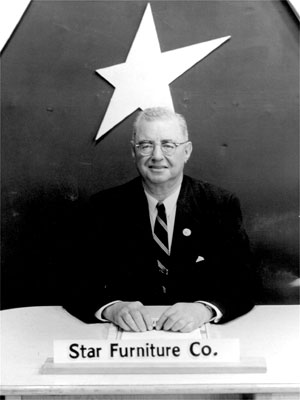
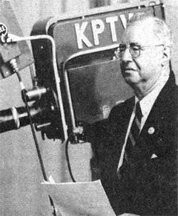
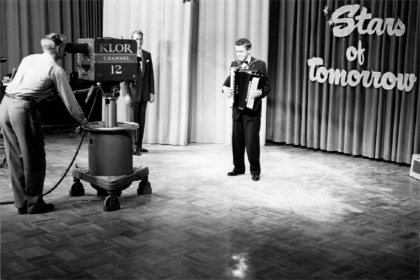
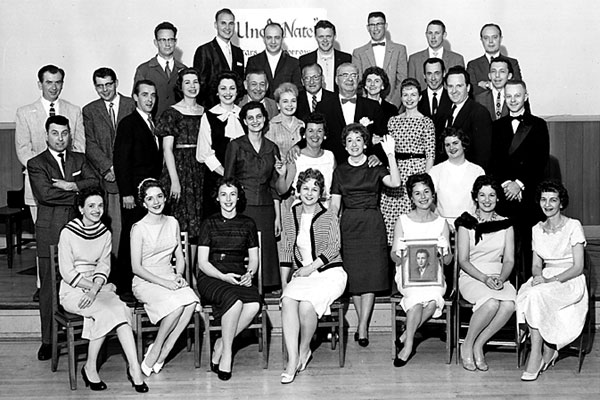
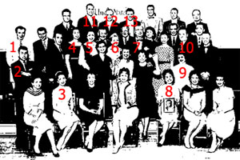
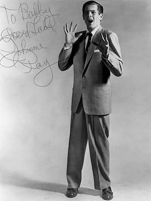
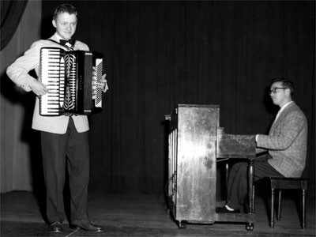

|

Stars of Tomorrow
KPTV November 3, 1953
KLOR +/- November 6,
1955 -
April
27, 1957
KPTV May
4, 1957 - March 8, 1964+
A
televised talent contest, which
aired on both KLOR and
KPTV.
Stars
of
Tomorrow:
Oldest
Talent
Show
in
U.S.A.
|
 |
 |
|
"Uncle
Nate"
Cohn,
host
of
Stars
of
Tomorrow. |
|
If you asked how many personalities have appeared on his
Stars
of
Tomorrow
show,
Nate Cohn would have
to
talk in terms of thousands. In its 30th sponsored year, this outstanding
program---which is currently carried over
KLOR, Channel 12 each Saturday at
6:30---has appeared on most Portland radio stations as well as network outlets. During that time, the show has received well in excess of a quarter of a million fan letters. For 15 Years, the program was regularly carried on
KGW
[radio;
After
1950,
the
show
aired
on
KEX
radio.]
For many years, the show was presented in the window of the Star Furniture Company. However, police found it increasingly difficult to control the traffic-stopping throngs that gathered in the vicinity, and for this reason the show was moved to the station studios. Even then, eager crowds spilled out into hallways and stairways.
Stars of Tomorrow is actually the result of the thinking and planning of three men. Originated by Uncle
Nate,
who
has acted as MC from the initial program, the show is sponsored by the Star Furniture Company, owned by Harry Zavin and Dave Light.
Although Uncle Nate loves all his kids without partiality, he is naturally proud of the ones who have made the big-time. Kay St.
Germain, Jane Powell and Nora Maxtin are only a few of his
protégés who have skyrocketed to fame and fortune.
It is only natural that Uncle Nate should feel a profound sympathy for the wide-eyed youngsters who hope an appearance on his show may spring-board them to eventual stardom. When most kids were playing cowboy and Indian, he traveled the
Sullivan-Considine circuit as Harold Hoff, "The Boy Wonder." During those sometime meager years, he developed a sure showman's instinct for spotting a "comer." However, even Uncle Nate can make an occasional mistake, which he freely admits. Here's how he himself describes one such error of judgment: "He was a Franklin High School student, about 16 or 17 years old, not too good looking, and he said he was a singer who accompanied himself on the piano. When the audition was over, I informed the boy that I'd be glad to have him appear on the show, but that didn't mean he was the greatest thing I'd ever heard " I explained that his voice was only fair,
that his piano playing was about average, and that I wasn't too impressed with his style of singing. However, I did like his personality and his desire to join our
Stars
of Tomorrow. Then I asked,
'What's your name, son?'
"His smile
was genuinely warm as he shook my hand and answered, 'Thanks for everything, Uncle
Nate.
'My name is Johnny
Ray'."
Article
in
TV-Radio
Prevue,
October
14,
1956.


A
KLOR
broadcast
from
December
1956.
Accordionist
Bob
Cantin
performs
in
front
of
the
camera
while
Lowell
Farmer
waits
off
stage
for
his
appearance.
[Photo
courtesy
Bob
Cantin]
|

May
1960:
Stars
of
Tomorrow
celebrates
25
years,
with
a
photo
of
some
of
its
most
enduring
performers.
[Photo
courtesy
Bob
Cantin]
|

|
Front row, sitting, left to right: Ladell Wilson; (3) Dorothy Wymore,
singer; Thelma Haner, tap dancer; Patti Ratcliff; (8) Ginny Becker,
singer/dancer; ?; ?
Front row, standing, left to right: (2) Jimmy Bianco, accordion; Maxine
Cohn; Sherman ?; Nicki Crockett; (9) Joanne Olsen, trumpet/tap dancer.
Middle row, left to right: (1) George Kristich, accordion; Walter Moe;
Johnny Wood, singer; (4,5,6) The Whiporwills, singers; (7) Uncle Nate Cohn,
Sally Ratcliff; ?; (10) Robert Adrian, Irish tenor; ?; ?
Back row, left to right: ?; (11) Lowell Farmer, singer; (12) Bob Boehmke,
trumpet; (13) Bob Cantin, accordion; Vernon Dunn; Earl Dunn; ?
Thanks to Bob Cantin and Dorothy (Wymore) Bryant for help with names.
If you can identify any of
these people, please e-mail this website. |
|

Singer
Johnnie
Ray,
an
Oregon
native,
was
one
of
Uncle
Nate's
biggest
"finds"
during
the
"Stars
of
Tomorrow"
run
on
radio
and
TV.
[Photo
courtesy
Bob
Cantin]
|
|
Stars of Tomorrow BROADCAST HISTORY |
KLOR
NOV 1955: SUN 5:00PM-5:30PM
NOV 1955: SUN 2:00PM-2:30PM
DEC 1955 - MAR
1956: SUN 2:30PM-3:00PM
MAR 1956 - APR 1956: SAT 5:30PM-6:00PM
MAY 1956 - SEP 1956: SAT 9:30PM-10:00PM
OCT 1956 - MAR 1957: SAT 6:30PM-7:00PM
KPTV
MAY 1957 - :
NOV 1958 - : SUN 2:00PM-2:30PM
JAN 1959 - JUN 1959: SUN 2:00PM-2:30PM
DEC 1959 - JUN 1960 - : SUN 1:30PM-2:00PM
SEP 1960 - : SUN 4:00PM-4:30PM
JAN 1961 - : SUN 1:30PM-2:00PM
FEB 1962 : SAT 1:30PM-2:00PM
FEB 1962 - MAY 1962: SUN 1:30PM-2:00PM
OCT 1962 - : SUN 4:30PM-5:00PM
FEB 1963 - JUN 1963: SUN 1:30PM-2:00PM
OCT 1963 - NOV 1963: SUN 4:30PM-5:00PM
MAR 1964 - : SAT 12:00PM-12:30PM
MAR 1964 - : SUN 1:30PM-2:00PM |
|
 |
Uncle
Nate
(Cohn)
first
asked
me
to
play
my
accordion
on
Stars
of
Tomorrow
in
1950
on
50,000-watt
KEX
Radio.
I
was
10
years
old
at
the
time,
and
played
weekly
on
that
program
every
Saturday
morning
for
6
or
7
years.
Barney
Keep
was
our
announcer
and
became
a
life-long
friend.
Uncle
Nate
took
a
group
of
us
out
to
do
stage
shows
from
time
to
time
and
we
were
paid
$2
-
$5
per
performance.
In
those
days,
that
was
pretty
good
money
and
beat
doing
a
paper
route.
|
 |
Accordionist
Bob
Cantin
performs,
accompanied
by
Merl
Lotz,
during
a
"Stars
of
Tomorrow"
show
in
Portland.
[Photo
courtesy
Bob
Cantin] |
In
1956
when
Lawrence
Welk
and
his
Orchestra
came
to
Portland,
I
was
a
soloist
on
Stars
of
Tomorrow
on
KPTV.
Welk
was
immensely
popular
at
the
time
and
came
over
to
KPTV
and
did
a
guest
appearance
on
our
show.
When
he
came
on
camera,
I
played
his
theme
song:
"Bubbles
in
the
Wine,"
to
his
enjoyment.
When
we
were
off
the
air,
Welk
presented
me
with
his
personal
pen
(it
had
a
miniature
champagne
bottle
on
the
top)
and
told
me
to
bring
it
to
the
back
stage
door
at
the
Civic
Auditorium
that
night
(the
concert
had
been
sold
out
for
weeks
and
no
tickets
were
available)
and
I
would
be
his
back
stage
guest
for
the
concert.
Obviously,
I
did
as
I
was
told
and
met
Myron
Floren,
the
Lennon
Sisters,
Alice
Lon,
among
the
other
regulars
on
his
show.
After
intermission,
Welk
invited
me
on
stage,
introduced
me
to
the
audience
and
handed
me
his
baton
to
direct
the
band
playing
"South
Rampart
Street
Parade."
To
this
day,
it
remains
a
highlight
of
my
career
as
a
professional
accordionist
and
entertainer.
KPTV,
KEX
and
Stars
of
Tomorrow
remain
fondly
in
my
memory.
Because
of
the
entertainment
opportunities
that
these
programs
afforded
me,
today
I
still
keep
my
skills
honed
and
play
professional
accordion
in
my
spare
time.
To
find
out
what
I've
been
doing
for
the
past
27
years
since
I
left
Portland, and what I'm currently doing,
I
invite
anyone
interested
to
visit my
web
site:
www.bobcantinentertainment.com.
Bob
Cantin
Phoenix,
AZ
My family owned the
Star Furniture Company which sponsored Stars of Tomorrow and which
employed Nate Cohn as our sales manager. Nate kept a regular stock of
Johnnie Ray pictures which he passed out to customers who visited the
store primarily to see Nate. However, once they were in the store he, and
our sales staff, talked them into buying furniture. Though I wasn’t alive
at the time, my grandfather told me that when the show broadcast from our
store window on 4th avenue the crowds would be so large that traffic would
be stopped on 4th. Because of this, the city council passed an ordinance
forbidding live entertainment in store windows, and that is why the show
moved into a studio. I do remember visiting Nate and the show in the
mid-1950s to watch the Mouseketeers, from the Mickey Mouse club. My
siblings and cousins and I got to meet several of the Mousketeers who were
about our ages. This was the highlight of my 1950s and probably of my
brother’s and sisters’ also. My father told me that after the transition
to television, Stars of Tomorrow was, at one point, the longest running
show on radio and television. It eventually might have been eclipsed by
the Ted Mack amateur hour, and it was surely bested by the radio
broadcasts of the Metropolitan Opera, but at one time Nate held the
record.
Rick Poplack
  
This page last updated on
August 24, 2025
|